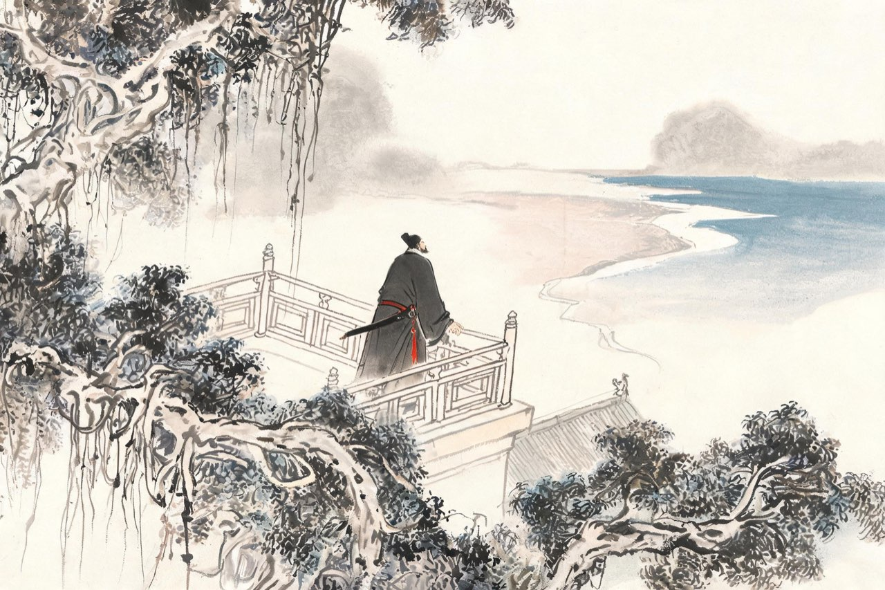

辛弃疾 · 1192-1202
瓢泉
追忆与青山

第三次
闲居十年之后，朝廷忽然想起了你：绍熙二年冬，起你为福建提点刑狱，次年春到任。你五十三岁。
你去了。次年，权工部侍郎（未上任），又知福州兼福建安抚使。在福州你依旧故我：整军、备武、宽征——有人劝你敛一敛，你说：总要有人做事。
绍熙五年，谏官攻讦再起，你又被罢了。
这是第三次。第一次，罢在四十二岁，你还委屈、还愤怒，写得出郁孤台下的行人泪；第二次起用前，你闲了整整十年，学会了在村居词里安放自己；这一次，你五十五岁，罢书下来，你收拾行装，平静得像早就知道。
三起三落。你渐渐看清：朝廷用你，如借剑一用；收回时，连鞘一起拿走。
回江西的路上，你绕道去看了铅山的瓢泉——多年前你买下的一处山居。该搬了。
注
- 福建任期职衔：绍熙二年（1191）冬起福建提点刑狱、三年（1192）春到任，绍熙四年（1193）知福州兼福建安抚使，同年秋被劾奉祠——正文「权工部侍郎（未上任）」未见著录，《宋史》本传作「迁大理少卿，加集英殿修撰」（另有「太府卿」一说），须按邓谱校定，待校；本场景取1194年被劾作结
- 罢官计数：正文作「第三次」，终章口径为三罢（1181、1194、1205）——按该口径 1194 为第二次，正文计数待统一，待校
- 「总要有人做事」：演绎，待校
- 瓢泉：铅山期居所，先购于带湖期（访铅山偶得泉，见《稼轩词编年笺注》附考），庆元二年（1196）带湖火后徙居——从邓谱
瓢泉
庆元二年，带湖庄园失火，楼堂毁去大半。
你索性举家迁往铅山瓢泉。泉在山坳里，形状如瓢，水昼夜不息。你在泉边筑室、开畦、种柳，把新居又布置成了一个家——只是这一回，你不再给居所起什么志在耕稼的名字了。
瓢泉的岁月比带湖更深。来往的旧友更少了，酒喝得更慢了。你五十七岁，鬓发全白，练兵的旧部散在四方，朝中的故人凋零殆尽。山中无历日，你用写词计算年成——一首一首，越写越淡，也越写越硬。
淡下去的是事功的执念，硬起来的是别的东西。它有时是追忆，有时是青山。此后几年，你最好的几首词，都从这眼泉边长出来。
注
- 带湖庄园火毁徙瓢泉：庆元二年（1196），从邓谱
- 「泉形如瓢」及瓢泉得名：从铅山地方志及邓谱附考，待校
- 「不再起耕稼之名」：与带湖「稼轩」相对的行文呼应，演绎
瓢泉的客人不多了，来的多谈旧事。某日有客慷慨谈起功名，你笑了——功名？你二十二岁就有过功名：旌旗、突骑、渡江、斩将。客人走后，你追念少年时事，戏作一阕。戏，是说自己，也是说这个题目——
鹧鸪天·有客慨然谈功名，因追念少年时事，戏作
壮岁旌旗拥万夫，锦襜突骑渡江初。
燕兵夜娖银胡䩮，汉箭朝飞金仆姑。
追往事，叹今吾，春风不染白髭须。
却将万字平戎策，换得东家种树书。
注
- 词题「有客慨然谈功名，因追念少年时事，戏作」——本题原文
- 系年：瓢泉期泛系年（约1197-1200）——场景年1198为代表年，非考订
- 「燕兵夜娖银胡䩮」：燕地金兵夜里整理银饰箭袋（娖，整理义）；「䩮」字诸本写法有异（一作簶），待校；「金仆姑」：箭名，出《左传》
- 「却将万字平戎策，换得东家种树书」：万字平戎策即《美芹十论》《九议》之谓——与本篇第三章遥相呼应
你在瓢泉起了间堂，叫停云。陶渊明有《停云》诗，思亲友也。一日独坐停云堂，水声山色竞来相娱，你说溪山也想仿例索词，于是坐下写。写到一半，那个一辈子不肯服老的人，先跟自己和解了——
贺新郎·甚矣吾衰矣（节选）
〔词为长调，此处节录上片后半与下片末二拍；上片起「甚矣吾衰矣。怅平生、交游零落，只今余几」，与下片「一尊搔首东窗里」至「回首叫、云飞风起」从略，全文俟按邓笺补录。〕
白发空垂三千丈，一笑人间万事。
问何物、能令公喜？
我见青山多妩媚，料青山见我应如是。
情与貌，略相似。
不恨古人吾不见，恨古人不见吾狂耳。
知我者，二三子。
注
- 词序大意：邑中园亭皆曾赋词，一日独坐停云，水声山色竞来相娱，意溪山欲援例索词，遂作数语，庶几仿佛渊明思亲友诗——序文从通行本
- 系年：瓢泉期泛系年——场景年1198为代表年，非考订
- 「白发空垂三千丈」：化用李白「白发三千丈」
- 「恨古人不见吾狂耳」：用《南史》张融「不恨我不见古人，所恨古人又不见我」语——狂语有本